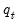
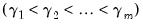
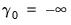
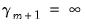
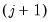
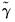
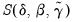
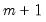
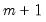

Suppose that there is an observable threshold variable  and strictly increasing
threshold values  such that we are in regime

if and only if:
where we set  and . Thus, we are in regime  if the value of the threshold variable is at least as large as the j
if the value of the threshold variable is at least as large as the j-th threshold value, but not as large as the -th threshold. (Note that we follow EViews convention by defining the threshold values as the first values of each regime.)
Given the threshold variable and the regression specification in Equation (35.1), we wish to find the coefficients

and

, and usually, the threshold values

. We may also use model selection to identify the threshold variable

.
Accordingly, the discussion of breakpoint testing (“Multiple Breakpoint Tests”) and estimation (
“Least Squares with Breakpoints”) may generally be applied in the current context. We will assume for our purposes that you are familiar with, or can refer to this material, and in the interest of brevity, we will minimize the amount of repetition in our discussion below.


and the regressors
and
will determine the type of TR specification. If is the
-th lagged value of
, Equation (35.3) is a self-exciting (SE) model with delay
; if it’s not a lagged dependent, it's a conventional TR model. If the regressors
and
contain only a constant and lags of the dependent variable, we have an autoregressive (AR) model. Thus, a SETAR model is a threshold regression that combines an autoregressive specification with a lagged dependent threshold variable.
Given the threshold variable and the regression specification in Equation (35.1), we wish to find the coefficients, say , minimization of the concentrated objective  is a simple least squares problem, we can view estimation as finding the set of thresholds and corresponding OLS coefficient estimates that minimize the sum-of-squares across all possible sets of
-threshold partitions.
Accordingly, the discussion of breakpoint testing (“Multiple Breakpoint Tests”) and estimation (“Least Squares with Breakpoints”) may generally be applied in the current context. We will assume for our purposes that you are familiar with, or can refer to this material, and in the interest of brevity, we will minimize the amount of repetition in our discussion below. observations and
observations and  potential thresholds (producing  regimes). (While we will use
potential thresholds (producing  regimes). (While we will use  to index the
to index the  observations, there is nothing in the structure of the model that requires time series data.)
observations, there is nothing in the structure of the model that requires time series data.) variables are those whose parameters do not vary across regimes, while the
variables are those whose parameters do not vary across regimes, while the  variables have coefficients that are regime-specific.
variables have coefficients that are regime-specific. individual regime specifications into a single equation:
individual regime specifications into a single equation: